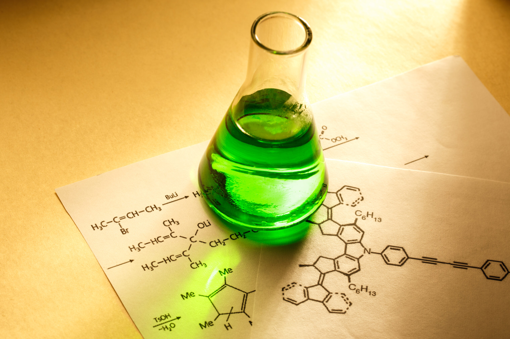
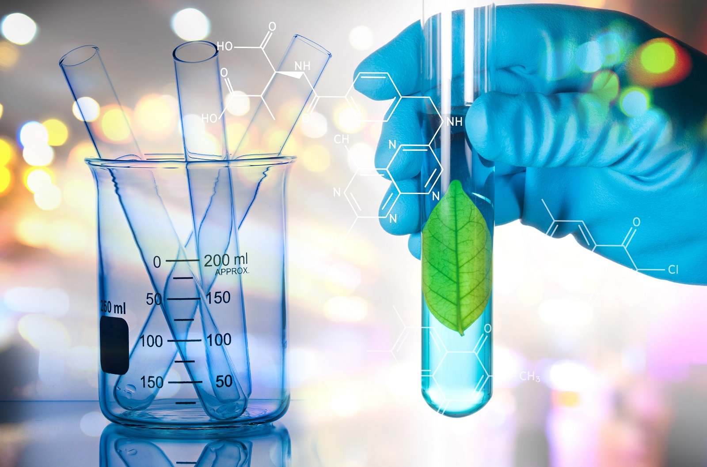

QUÍMICA
O que é Química
Antes de sabermos a importância da química na área de
desenvolvimento de sistema nos dias atuais, precisamos
saber o que é essa ciência e para que serve. Podemos
dizer que a química é a nossa fonte de vida, pois por
mais que possa parecer, nem sempre a química é ruim, para
falar a verdade dependemos dela 24 horas por dia, um bom
exemplo é quando acordamos, mesmo que nos passe
despercebido, nosso realiza diversas reações químicas,
seja só para ilustrar o sulco nasal ou o que fica nos
olhos ou durante o dia no organismo da pessoa. Essa
pessoa então levanta e se dirige em direção ao banheiro,
para essa pessoa chegar até o banheiro ela necessitou
de energia para realizar um trabalho e de onde veio essa
energia? Sim, foi através da química!

O que é Tecnologia?
Como já dito anteriormente, a química é essencial para a
vida humana, onde tudo o que conhecemos hoje em dia provém
da mesma, e no setor de programação não seria diferente.
Quando falamos em tecnologia, muitas pessoas associam ao uso
da internet, mas na verdade tecnologia é tudo aquilo que foi
criado para otimizar e facilitar as atividades e o tempo do
ser humano.
Agora que já sabemos o que é química, precisamos saber um
outro detalhe que irá ajudar bastante em nossa compreensão,
o que é programação e como a área de desenvolvimentos de
sistemas se relaciona com a mesma. De um modo geral,
programação é o processo de escrever, testar e manter programas
de computador. Esses programas, por sua vez, consistem em um
conjunto de instruções determinado pelo programador que descreve
as tarefas que a máquina deve executar e atende a vários
propósitos. A própria explicação já justifica a área, como
podemos perceber sem os códigos não existiria a profissão e
consequentemente os sistemas.

Qual a importância da Química na área de
Desenvolvimento de Sistemas
Um bom exemplo de como a química facilitou nosso dia-a-dia
é através dos materiais usados para produzir os computadores,
onde antigamente era utilizado materiais pesados e de grande
porte, já hoje em dia podemos encontrar máquinas que cabem em
nosso bolso, isso passa despercebido, mas as peças utilizadas
na produção provém da química, por mais que indiretamente em
alguns casos.